頻域影像處理：傅立葉轉換#
本章重點
離散傅立葉轉換（DFT）如何把訊號從空間（或時間）域轉換到頻率域，以及頻率的排序方式（
fftshift）二維影像的頻譜視覺化：振幅（magnitude）與相位（phase）各自攜帶什麼資訊
卷積定理：空間域的卷積等於頻域的乘法，這也是 FFT 能加速卷積運算的原因
頻域濾波（低通、高通、帶通）與其副作用——振鈴效應（ringing）
反濾波（inverse filtering）為何是病態問題，以及 Wiener 去卷積如何緩解雜訊放大
這一整套頻域工具，正是理解 cryo-EM 中 CTF（contrast transfer function）與其校正方法的關鍵基礎
一維訊號的頻率觀點：從時間域到頻率域#
我們先從一個簡單的例子出發：一個頻率為 10 Hz 的正弦波。在**時間域（time domain）**中，它看起來就是隨時間規律起伏的波形。
import numpy as np
import matplotlib.pyplot as plt
import skimage as ski
from scipy import signal
import timeit
plt.rcParams["image.cmap"] = "gray"
np.random.seed(0)
傅立葉定理#
傅立葉定理（Fourier’s Theorem） 是頻域分析的核心假設：任何「表現良好」的訊號，都可以看成一系列不同頻率、不同強度的正弦／餘弦波疊加而成。對週期性訊號，它寫成傅立葉級數；對非週期性訊號，則寫成連續的積分形式：
電腦無法處理無限、連續的訊號，因此我們必須將時間與頻率都離散化，最後得到離散傅立葉轉換（Discrete Fourier Transform, DFT）：
\(H[k]\) 是複數，其振幅（magnitude） 代表該頻率成分的強度，相位（phase） 則描述該成分在波形中的相對位置。若輸入訊號為實數，頻譜會呈現共軛對稱：\(H[-k] = H^*[k]\)。
現在讓我們實際畫出這個 10 Hz 正弦波的時間域波形，再用 DFT 觀察它的頻率組成。
f = 10 # 訊號頻率 [Hz]
f_s = 100 # 取樣率 [Hz]
t = np.linspace(0, 2, 2 * f_s, endpoint=False)
x = np.sin(2 * np.pi * f * t)
fig, ax = plt.subplots(figsize=(6, 3))
ax.plot(t, x)
ax.set_xlabel("Time [s]")
ax.set_ylabel("Amplitude")
ax.set_title("A 10 Hz sine wave (time domain)")
fig.tight_layout()
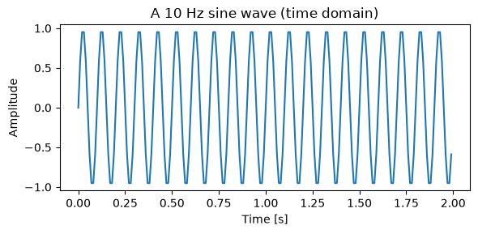
X = np.fft.fft(x)
freqs = np.fft.fftfreq(len(x), d=1 / f_s)
fig, ax = plt.subplots(figsize=(6, 3))
ax.stem(freqs, np.abs(X))
ax.set_xlabel("Frequency [Hz]")
ax.set_ylabel("Magnitude |X[k]|")
ax.set_xlim(-f_s / 2, f_s / 2)
ax.set_title("DFT magnitude spectrum")
fig.tight_layout()
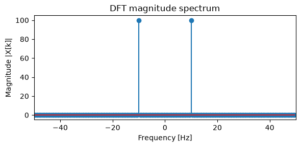
頻譜在 \(\pm10\) Hz 處各有一根尖峰，這正對應到我們輸入的 10 Hz 正弦波；由於輸入是實數訊號，負頻率端的峰值只是正頻率端的鏡像（共軛對稱），並非額外的資訊。
頻率排序與 fftshift#
由於實作上的歷史因素，np.fft.fft 回傳的陣列，其頻率排列順序是「由低到高、再折回負頻率」，而不是我們直覺上「由負到正」排好的順序。np.fft.fftfreq 會告訴我們每個位置對應的實際頻率；而 np.fft.fftshift 則會把陣列重新排列，讓零頻率（DC 分量）置中，方便視覺化。下面我們用一段短訊號，驗證「用 fftfreq 手動排序」跟「直接呼叫 fftshift」兩種做法是等價的。
x_short = np.array([1, 5, 12, 7, 3, 0, 4, 3, 2])
X_short = np.fft.fft(x_short)
freqs_short = np.fft.fftfreq(len(x_short), d=1)
sorted_idx = np.argsort(freqs_short)
manual_sorted = X_short[sorted_idx]
shift_sorted = np.fft.fftshift(X_short)
print("freqs (原始順序): ", freqs_short)
print("freqs (fftshift 後): ", np.fft.fftshift(freqs_short))
print("手動排序 == fftshift 結果?", np.allclose(manual_sorted, shift_sorted))
freqs (原始順序): [ 0. 0.11111111 0.22222222 0.33333333 0.44444444 -0.44444444
-0.33333333 -0.22222222 -0.11111111]
freqs (fftshift 後): [-0.44444444 -0.33333333 -0.22222222 -0.11111111 0. 0.11111111
0.22222222 0.33333333 0.44444444]
手動排序 == fftshift 結果? True
二維 DFT：影像的頻域表示#
影像可以看成一個二維函數 \(h[x, y]\)，一樣可以分解成許多二維正弦／餘弦「基底函數」的加權和：
每一個頻譜位置 \((k_x, k_y)\) 對應到一個特定方向與頻率的平面波。下面我們直接在頻譜上只放一個非零係數（並補上其共軛對稱點以確保輸出為實數），透過反傅立葉轉換看看它對應到怎樣的空間圖樣。
def basis_function(kx, ky, N=64):
H = np.zeros((N, N), dtype=complex)
H[ky, kx] = 1.0
H[-ky, -kx] = np.conj(H[ky, kx]) # 補上共軛對稱點，確保還原後是實數
return np.fft.ifft2(H).real
N_demo = 64
fig, axes = plt.subplots(2, 3, figsize=(10, 6))
for i, (kx, ky) in enumerate([(2, 0), (0, 5), (6, 4)]):
spectrum = np.zeros((N_demo, N_demo))
spectrum[ky, kx] = 1
spectrum[-ky, -kx] = 1
axes[0, i].imshow(np.fft.fftshift(spectrum), cmap="hot")
axes[0, i].set_title(f"Spectrum: (kx={kx}, ky={ky})")
axes[0, i].axis("off")
basis = basis_function(kx, ky, N=N_demo)
axes[1, i].imshow(basis, cmap="gray")
axes[1, i].set_title("Basis function h(x, y)")
axes[1, i].axis("off")
fig.tight_layout()
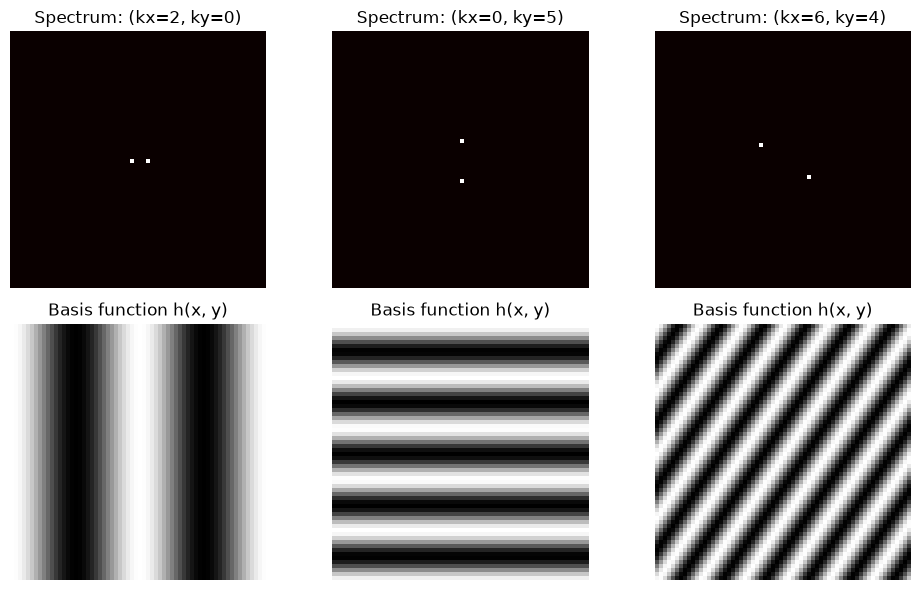
可以看到：頻譜上一個點的位置決定了空間圖樣的方向與週期——離中心越遠，對應的空間頻率越高（條紋越密）。真實影像的頻譜，就是把成千上萬個這樣的基底函數依不同權重疊加起來。
接著我們對一張真實影像做完整的 2D DFT，並確認「先做 FFT 再做反 FFT」可以完美地還原原始影像。
image = ski.util.img_as_float(ski.data.camera())
F = np.fft.fft2(image)
image_reconstructed = np.fft.ifft2(F).real
print("重建誤差（最大絕對值）:", np.max(np.abs(image - image_reconstructed)))
fig, axes = plt.subplots(1, 2, figsize=(8, 4))
axes[0].imshow(image)
axes[0].set_title("Original")
axes[0].axis("off")
axes[1].imshow(image_reconstructed)
axes[1].set_title("FFT -> IFFT reconstruction")
axes[1].axis("off")
fig.tight_layout()
重建誤差（最大絕對值）: 8.881784197001252e-16
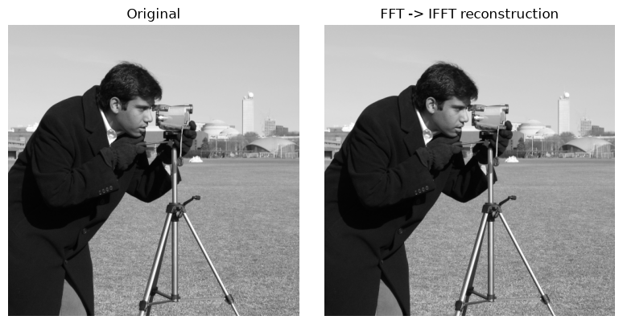
繪製頻譜：振幅與相位#
頻譜中的直流係數 \(H[0,0]\)（也就是所有像素的平均值）通常遠大於其他係數，會讓其他成分難以觀察，因此習慣上會取對數壓縮動態範圍；也常用 fftshift 把零頻率移到中心，方便觀察低頻與高頻的分布。
F_shifted = np.fft.fftshift(F)
magnitude_spectrum = np.log(1 + np.abs(F_shifted))
fig, axes = plt.subplots(1, 2, figsize=(8, 4))
axes[0].imshow(image)
axes[0].set_title("Image (spatial domain)")
axes[0].axis("off")
axes[1].imshow(magnitude_spectrum, cmap="viridis")
axes[1].set_title("log(1 + |F|) (frequency domain)")
axes[1].axis("off")
fig.tight_layout()
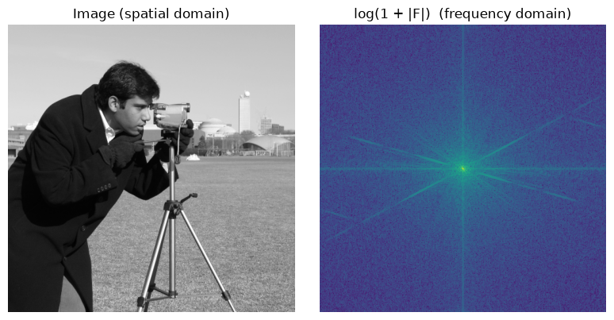
頻譜中心附近的高值對應影像的低頻／平滑成分，離中心越遠則對應邊緣與細節等高頻成分。
傅立葉係數是複數，除了振幅之外還有相位（phase）。相位資訊看起來遠不如振幅直觀，但它才是決定影像空間結構的關鍵。下面我們把兩張影像的振幅與相位互換，看看重建結果會像哪一張。
image_b = ski.util.img_as_float(ski.data.moon())
Fa = np.fft.fft2(image)
Fb = np.fft.fft2(image_b)
mag_a_phase_b = np.abs(Fa) * np.exp(1j * np.angle(Fb))
mag_b_phase_a = np.abs(Fb) * np.exp(1j * np.angle(Fa))
recon_1 = np.fft.ifft2(mag_a_phase_b).real
recon_2 = np.fft.ifft2(mag_b_phase_a).real
fig, axes = plt.subplots(2, 2, figsize=(8, 8))
axes[0, 0].imshow(image)
axes[0, 0].set_title("Image A (camera)")
axes[0, 0].axis("off")
axes[0, 1].imshow(image_b)
axes[0, 1].set_title("Image B (moon)")
axes[0, 1].axis("off")
axes[1, 0].imshow(recon_1)
axes[1, 0].set_title("|A| with phase(B)")
axes[1, 0].axis("off")
axes[1, 1].imshow(recon_2)
axes[1, 1].set_title("|B| with phase(A)")
axes[1, 1].axis("off")
fig.tight_layout()
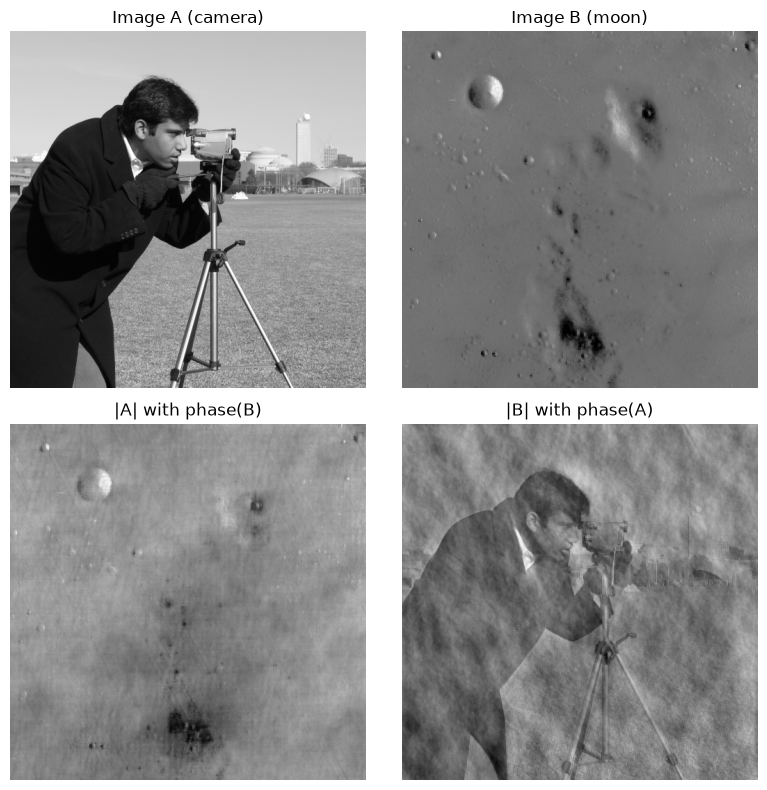
重建結果的空間結構，明顯是由相位所主導，而不是振幅：recon_1（|A| 配上 B 的相位）看起來像是 B 的輪廓，反之亦然。原因是振幅只告訴我們「每個頻率成分有多強」，並沒有說明「強度出現在哪裡」；相位才描述了各個成分之間的相對排列，也就是我們真正關心的空間資訊。
卷積定理與 FFT 加速#
卷積定理（convolution theorem） 是頻域分析最重要的性質之一：空間域中的卷積，等價於頻域中的逐點乘法：
也就是說，若想對影像做濾波（例如模糊），可以先各自轉到頻域，把兩者的頻譜逐點相乘，再轉回空間域即可，不需要進行滑動視窗式的卷積運算。下面我們用一個高斯核（Gaussian kernel）驗證這件事：把核心補零到與影像相同大小、用 ifftshift 讓核心的中心對齊到頻域原點，這樣頻域乘法得到的就是循環卷積（circular convolution），與 scipy.signal.convolve2d(..., boundary="wrap") 的結果應完全一致。我們也順便比較直接卷積與 FFT 卷積的執行速度。
image_small = ski.util.img_as_float(ski.data.coins()) # 影像較小，方便重複計時
kernel_small = np.outer(
signal.windows.gaussian(15, std=3), signal.windows.gaussian(15, std=3)
)
kernel_small /= kernel_small.sum()
# 把小核心補零到影像大小，並用 ifftshift 讓核心中心對齊到頻域原點 (0, 0)
kernel_full = np.zeros_like(image_small)
kh, kw = kernel_small.shape
start_r = image_small.shape[0] // 2 - kh // 2
start_c = image_small.shape[1] // 2 - kw // 2
kernel_full[start_r : start_r + kh, start_c : start_c + kw] = kernel_small
kernel_full = np.fft.ifftshift(kernel_full)
F_img = np.fft.fft2(image_small)
F_ker = np.fft.fft2(kernel_full)
blurred_freq = np.fft.ifft2(F_img * F_ker).real
# 空間域中對應的循環卷積
blurred_spatial = signal.convolve2d(image_small, kernel_small, mode="same", boundary="wrap")
print(
"頻域乘法 vs. 循環卷積的最大差異:",
np.max(np.abs(blurred_freq - blurred_spatial)),
)
# 比較直接卷積與 FFT 卷積的執行時間
t_direct = timeit.timeit(
lambda: signal.convolve2d(image_small, kernel_small, mode="same"), number=5
)
t_fft = timeit.timeit(
lambda: signal.fftconvolve(image_small, kernel_small, mode="same"), number=5
)
print(f"直接卷積 (convolve2d): {t_direct * 1000 / 5:.2f} ms/次")
print(f"FFT 卷積 (fftconvolve): {t_fft * 1000 / 5:.2f} ms/次 (加速 {t_direct / t_fft:.1f} 倍)")
fig, axes = plt.subplots(1, 3, figsize=(12, 4))
axes[0].imshow(image_small)
axes[0].set_title("Original")
axes[0].axis("off")
axes[1].imshow(blurred_freq)
axes[1].set_title("Freq-domain product\n(= circular convolution)")
axes[1].axis("off")
axes[2].imshow(np.log(1 + np.abs(np.fft.fftshift(F_img * F_ker))), cmap="viridis")
axes[2].set_title("Output spectrum")
axes[2].axis("off")
fig.tight_layout()
頻域乘法 vs. 循環卷積的最大差異: 1.1102230246251565e-15
直接卷積 (convolve2d): 21.97 ms/次
FFT 卷積 (fftconvolve): 1.40 ms/次 (加速 15.7 倍)
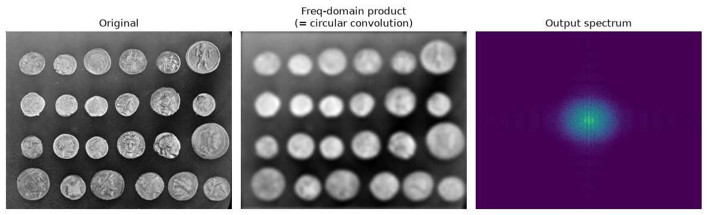
兩種算法在數值上幾乎完全相同（誤差在浮點精度範圍內），而 FFT 卷積在核心較大或影像較大時會明顯快得多——這也是為什麼頻域濾波在實務上經常比空間域滑動視窗更受青睞。
頻域濾波：低通、高通、帶通與振鈴效應#
有了卷積定理，我們可以直接在頻域中設計濾波器：只要把頻譜中不想要的頻率成分設為零，再做反傅立葉轉換即可。
低通濾波器（low-pass filter）：只保留半徑 \(r\) 以內的低頻成分，捨棄高頻——效果類似模糊化，去除細節與雜訊。
高通濾波器（high-pass filter）：只保留半徑 \(r\) 以外的高頻成分——效果是強化邊緣與細節，捨棄整體輪廓。
帶通濾波器（band-pass filter）：只保留一個環狀頻率範圍 \(r_1 < r \le r_2\)——常用來凸顯特定尺度的結構。
下面用「硬遮罩（hard mask）」——也就是直接把頻率成分歸零——來實作這三種濾波器。
def freq_mask(shape, r_inner, r_outer, kind="low"):
rows, cols = shape
cy, cx = rows // 2, cols // 2
Y, X = np.ogrid[:rows, :cols]
dist = np.sqrt((Y - cy) ** 2 + (X - cx) ** 2)
if kind == "low":
return dist <= r_outer
elif kind == "high":
return dist > r_outer
else: # band-pass
return (dist > r_inner) & (dist <= r_outer)
image = ski.util.img_as_float(ski.data.camera())
F_shifted = np.fft.fftshift(np.fft.fft2(image))
fig, axes = plt.subplots(1, 3, figsize=(12, 4))
mask_low = freq_mask(image.shape, 0, 20, kind="low")
low = np.fft.ifft2(np.fft.ifftshift(F_shifted * mask_low)).real
axes[0].imshow(low)
axes[0].set_title("Low-pass (r=20)")
axes[0].axis("off")
mask_high = freq_mask(image.shape, 0, 20, kind="high")
high = np.fft.ifft2(np.fft.ifftshift(F_shifted * mask_high)).real
axes[1].imshow(high, vmin=-0.2, vmax=0.2)
axes[1].set_title("High-pass (r=20)")
axes[1].axis("off")
mask_band = freq_mask(image.shape, 15, 40, kind="band")
band = np.fft.ifft2(np.fft.ifftshift(F_shifted * mask_band)).real
axes[2].imshow(band, vmin=-0.2, vmax=0.2)
axes[2].set_title("Band-pass (15 < r <= 40)")
axes[2].axis("off")
fig.tight_layout()
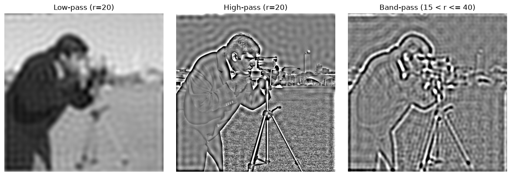
仔細看低通濾波的結果，邊緣附近會出現一圈一圈的波紋——這就是振鈴效應（ringing），又稱吉布斯現象（Gibbs phenomenon）。原因是我們用了「硬遮罩」，在頻域中造成了一個不連續的邊界（頻率響應從 1 瞬間跳到 0）；根據卷積定理，這樣的硬遮罩對應到空間域中是一個帶有振盪的 sinc 函數，與影像卷積後就會在邊緣附近產生這種漣漪狀的偽影。若改用邊界平滑過渡的遮罩（例如高斯型遮罩），振鈴效應就會大幅減輕。
反濾波與其病態性#
前面我們示範了「已知模糊核」時，如何在頻域中對影像做模糊。那反過來呢？如果拿到一張模糊影像，且已知（或假設已知）模糊核，能不能反推回原始影像？這個任務稱為去卷積（deconvolution）。
最直覺的做法稱為反濾波（inverse filter）：既然模糊等於頻域相乘 \(\hat{g} = \hat{f} \cdot \hat{h}\)，那還原 \(f\) 只要在頻域中除回去 \(\hat{f} = \hat{g} / \hat{h}\) 即可。下面我們比較「無雜訊」與「有雜訊」兩種情況下，反濾波的表現。
image = ski.util.img_as_float(ski.data.camera())
kernel = np.outer(
signal.windows.gaussian(image.shape[0], std=3),
signal.windows.gaussian(image.shape[1], std=3),
)
kernel /= kernel.sum()
F_img = np.fft.fft2(image)
F_ker = np.fft.fft2(np.fft.ifftshift(kernel))
blurred = np.fft.ifft2(F_img * F_ker).real
noisy_blurred = blurred + 0.01 * np.random.randn(*blurred.shape)
def inverse_filter(observed, F_ker, eps=1e-3):
F_obs = np.fft.fft2(observed)
F_restored = F_obs / (F_ker + eps)
return np.fft.ifft2(F_restored).real
restored_clean = inverse_filter(blurred, F_ker)
restored_noisy = inverse_filter(noisy_blurred, F_ker)
fig, axes = plt.subplots(1, 4, figsize=(16, 4))
axes[0].imshow(image)
axes[0].set_title("Original")
axes[0].axis("off")
axes[1].imshow(blurred)
axes[1].set_title("Blurred (no noise)")
axes[1].axis("off")
axes[2].imshow(np.clip(restored_clean, 0, 1))
axes[2].set_title("Inverse filter\n(clean input)")
axes[2].axis("off")
axes[3].imshow(np.clip(restored_noisy, 0, 1))
axes[3].set_title("Inverse filter\n(noisy input, 1% noise)")
axes[3].axis("off")
fig.tight_layout()
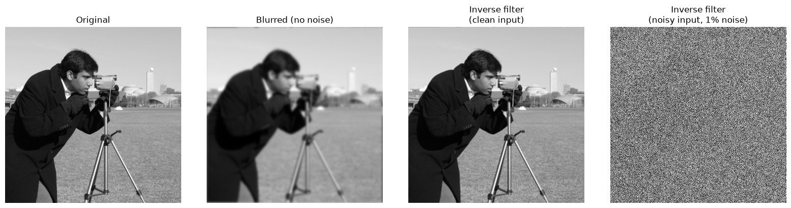
在完全沒有雜訊的理想情況下，反濾波幾乎能完美還原原始影像。但只要加入極小的雜訊（僅 1%），還原結果就嚴重失真甚至變成雜訊。原因在於：模糊核 \(\hat{h}\) 在高頻處通常非常接近零，除以一個接近零的數，等於把該頻率上原本微小的雜訊放大成天文數字。這就是**反濾波是病態問題（ill-posed problem）**的核心原因——輸入極小的擾動（雜訊），會被放大成輸出極大的誤差。
Wiener 去卷積#
Wiener 濾波器（Wiener filter） 透過在除法中加入雜訊功率的資訊，讓校正量在雜訊主導的頻率（通常是模糊核接近零的高頻處）自動衰減，而不是像反濾波一樣硬除，藉此在「去模糊」與「不放大雜訊」之間取得平衡。下面使用 scikit-image 內建的無監督 Wiener 濾波器，示範帶去卷積的影像去雜訊。
image_crop = ski.util.img_as_float(ski.data.camera())[::2, ::2] # 縮小以加快示範速度
psf = np.outer(signal.windows.gaussian(7, std=1.5), signal.windows.gaussian(7, std=1.5))
psf /= psf.sum()
blurred2 = signal.convolve2d(image_crop, psf, mode="same")
blurred2_noisy = blurred2 + 0.01 * blurred2.std() * np.random.standard_normal(blurred2.shape)
restored_wiener, _ = ski.restoration.unsupervised_wiener(blurred2_noisy, psf)
fig, axes = plt.subplots(1, 3, figsize=(12, 4))
axes[0].imshow(image_crop)
axes[0].set_title("Original")
axes[0].axis("off")
axes[1].imshow(blurred2_noisy)
axes[1].set_title("Blurred + noisy")
axes[1].axis("off")
axes[2].imshow(restored_wiener)
axes[2].set_title("Wiener deconvolution")
axes[2].axis("off")
fig.tight_layout()
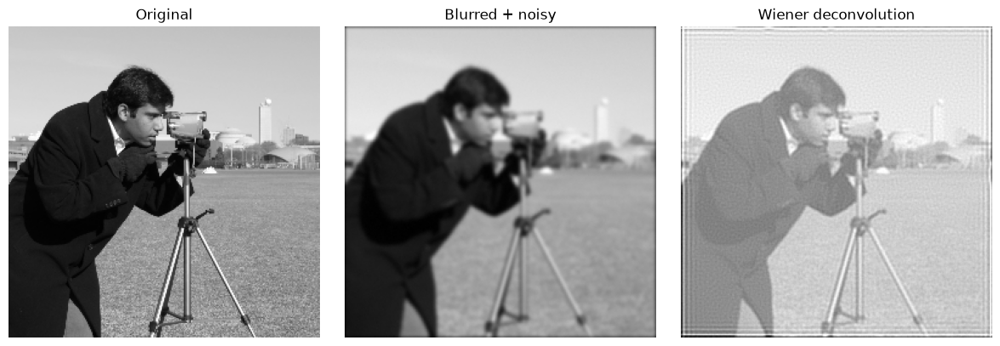
與 cryo-EM 的連結
這一整章的頻域工具，其實正是理解 cryo-EM 影像形成過程最關鍵的橋樑。
顯微鏡並不會直接給我們「乾淨」的投影影像。電子光學系統中的離焦（defocus）與球差（spherical aberration），會像一個頻域的 transfer function 一樣，對每個空間頻率的訊號分別加權：
也就是說，觀測到的影像頻譜，等於「真實投影的頻譜」乘上 CTF、再加上雜訊。這正好呼應本章開頭的卷積定理：模糊在頻域中就是乘法。
CTF 本身是一個振盪函數，會隨著空間頻率不斷正負交替，並在特定的空間頻率處通過零點。在零點附近，真實訊號的振幅在觀測影像中幾乎完全消失——這些頻率的資訊實質上已經遺失，無法單靠這一張影像復原。
這正好對應到我們剛剛看到的問題：如果想從觀測影像回推真實投影，直覺的做法是除以 CTF（也就是反濾波）。但我們已經看到反濾波是病態問題——除數一旦接近零，雜訊就會被放大到不成比例。CTF 的零點，正是反濾波在 cryo-EM 中失效的地方。
因此實務上很少直接做反濾波，而是採用兩種較穩健的策略：
Phase flipping：只修正 CTF 帶來的相位反轉（把 CTF 為負的頻率乘上 \(-1\)），完全不動振幅，因此不會放大雜訊，但零點附近的振幅遺失依然存在。
Wiener-style CTF correction：借用本章 Wiener 去卷積的精神，在校正時加入雜訊項作為正則化，讓校正量在零點附近自動衰減，而不是硬除。
def ctf_gamma(s, defocus_A, wavelength_A, cs_A):
"""相位偏移函數 gamma(s)，用來描述 CTF 隨空間頻率 s 的振盪。"""
return 2 * np.pi * (
-0.5 * defocus_A * wavelength_A * s**2
+ 0.25 * cs_A * wavelength_A**3 * s**4
)
defocus_A = 1.5e4 # defocus = 1.5 um, 換算成 Angstrom
wavelength_A = 0.0251 # 200 kV 電子波長, Angstrom
cs_A = 2e7 # Cs = 2 mm, 換算成 Angstrom
s = np.linspace(1e-4, 0.35, 3000) # 空間頻率 [1/Angstrom]
gamma = ctf_gamma(s, defocus_A, wavelength_A, cs_A)
ctf = np.sin(gamma)
# 找出前幾個零點的位置，換算成對應的解析度 (Angstrom)
sign_change = np.where(np.diff(np.sign(ctf)) != 0)[0]
zero_s = s[sign_change][:5]
zero_res = 1 / zero_s
fig, ax = plt.subplots(figsize=(8, 3.5))
ax.plot(s, ctf)
ax.axhline(0, color="gray", linewidth=0.8)
ax.plot(zero_s, np.zeros_like(zero_s), "ro", markersize=4)
ax.set_xlabel("Spatial frequency s [1/Angstrom]")
ax.set_ylabel(r"CTF(s) = sin($\gamma$(s))")
ax.set_title("1D CTF: defocus=1.5 um, 200 kV, Cs=2 mm")
fig.tight_layout()
print("前 5 個零點的空間頻率 [1/Angstrom]:", np.round(zero_s, 4))
print("對應的解析度 [Angstrom]: ", np.round(zero_res, 2))
前 5 個零點的空間頻率 [1/Angstrom]: [0.0516 0.0729 0.0894 0.1032 0.1155]
對應的解析度 [Angstrom]: [19.4 13.72 11.19 9.69 8.66]
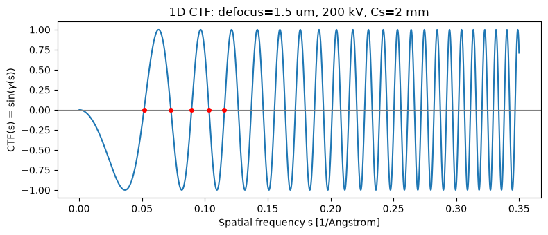
從圖中可以看到，CTF 在低頻處先是負值一大段（相位完全反轉），接著開始快速振盪並反覆通過零點——第一個零點大約落在 \(s \approx 0.052\ \text{\AA}^{-1}\)，對應解析度約 19 Å；之後零點越來越密集，代表在較高解析度（較高空間頻率）處，資訊遺失得更頻繁。
由於單一張影像的 CTF 零點位置由 defocus 唯一決定，這些頻率的資訊在這張影像中永久遺失。這正是為什麼實驗上通常會收集多張不同 defocus 的顆粒影像：不同 defocus 對應的 CTF 零點位置不同，彼此可以互補，讓合併後的資料集在幾乎所有空間頻率上都保有可用的訊號——這也是後續章節談到 cryo-EM 資料收集策略時，會反覆出現的核心概念。